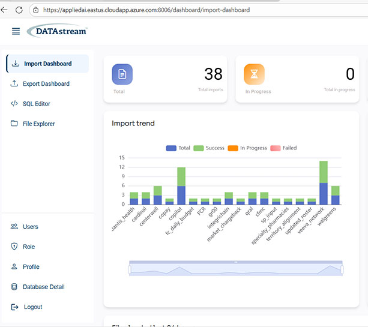

Slipstream already sells the governed data foundation. The missing leverage point is a mobile operations desk that turns lagging feeds, QA exceptions, and support risk into one ranked queue Joe's team can clear before visibility and compliance slip.

A mobile command surface for the few issues that matter most right now: stale dashboards, delayed study feeds, failed validation, or support escalations tied to active programs.
The product page, clinical case study, hiring pages, and external discussions all point to the same gap: strong data foundations still need a faster operational surface for the moments when action cannot wait.
Slipstream says DATAstream cut manual aggregation by eighty percent while improving near real-time trial visibility.
The live `QA-Analyst -- DATAstream` role explicitly covers dashboard, dataset, and pipeline validation with audit requirements.
The live service-desk role covers ServiceNow, Freshservice, or Zendesk plus remote support for tablets and mobile devices.
Clinical and analytics communities still describe fragmented systems, manual exports, and weak actionability between systems.
The left phone shows how the current workflow still feels: insight is available, but urgency is scattered. The right phone compresses that into one mobile queue Joe can act on immediately.
Dashboards, QA checks, and service issues exist, but priority is hidden across tools and follow-up chains.
Trial performance view last refreshed 7h ago. Site variance and enrollment lag are visible only after the next warehouse load finishes.
Information exists, but urgency is buried in the gap between dashboards, QA evidence, and service-desk tooling.
One mobile queue ranks the issues that threaten visibility, quality, or delivery and assigns the next action instantly.
Clinical ingest for Study 14A is 3.2h behind SLA. Last clean load was 05:41. Site metrics and variance reporting are now stale.
Every decision records approver, timestamp, impacted datasets, evidence, and follow-up owner so mobile speed does not trade off against compliance.
The prototype stays narrow on purpose. It does not replace DATAstream. It gives Joe a mobile operating surface for the few moments where delay is expensive.
Instead of opening dashboards to figure out what might be wrong, Joe sees the highest-risk study load, QA failure, or support issue first with clear severity and business impact.
Each issue carries an accountable owner plus fast actions such as rerun, escalate, request validation, or notify the study team. No extra hunt across tools.
Evidence, lineage, failed rule, release note, and approval history travel with the alert so the mobile layer speeds operations without weakening traceability.
Slipstream's public signals suggest the timing is right: more investment, more platform work, more QA rigor, and more frontline support complexity. This concept makes that scale easier to operate.
Slipstream's August 5, 2025 investment announcement explicitly says the company is investing in people, systems, and processes while expanding across new and existing markets.
The home page highlights a first Agentforce life-sciences implementation on an iPad. Mobile is already part of the brand story, just not yet productized for ops visibility.
Joe's role, the DATAstream QA posting, and the service-desk posting all point to one decision maker type who would actually care about this: someone accountable for repeatable execution.
We built this as a practical mobile wedge for Joe Shramek's operating context: high-risk data, QA, and support issues compressed into one action queue that is easier to review, escalate, and trust.